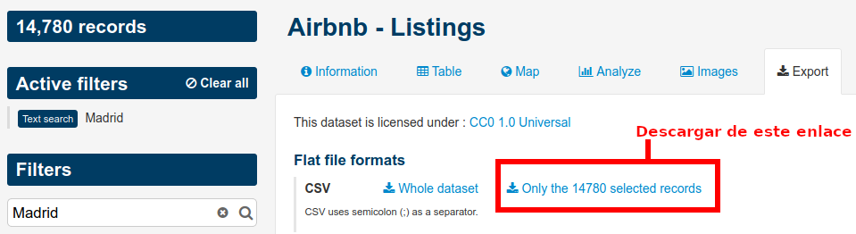

Vamos a cargar el dataset de AirBnB descargado de aquí

# Carga del dataset de airbnb
airbnb <- read.csv('airbnb-listings.csv',sep = ';')
options(repr.plot.height = 4,repr.plot.width = 6,repr.plot.res = 300)Vamos a quedarnos con las columnas de mayor interés: ‘City’,‘Room.Type’,‘Neighbourhood’,‘Accommodates’,‘Bathrooms’,‘Bedrooms’,‘Beds’,‘Price’,‘Square.Feet’,‘Guests.Included’,‘Extra.People’,‘Review.Scores.Rating’,‘Latitude’, ‘Longitude’ Nos quedarmos solo con las entradas de Madrid para Room.Type==“Entire home/apt” y cuyo barrio (Neighbourhood) no está vacio ’’ Podemos eliminar las siguientes columnas que ya no son necesarias: “Room.Type”,‘City’ Llama a nuevo dataframe df_madrid.
library(dplyr) # Selección de columnas airbnb <- airbnb[,c('City','Room.Type','Neighbourhood','Accommodates','Bathrooms','Bedrooms','Beds','Price','Square.Feet','Guests.Included','Extra.People','Review.Scores.Rating','Latitude', 'Longitude')] airbnb # Creación del df de Madrid con Room Type = Entire home/apt df_madrid <- airbnb |> filter(City == 'Madrid') |> filter(Room.Type == 'Entire home/apt') # Convertimos los datos vacios de Neighbourhood en NA df_madrid$Neighbourhood[which(df_madrid$Neighbourhood == '')] <- NA # Elimimanos los datos que tienen NA en Neighbourhood y eliminamos las columnas City y Room Type df_madrid <- df_madrid |> filter(!is.na(Neighbourhood)) |> select(-c('City','Room.Type')) df_madridCrea una nueva columna llamada Square.Meters a partir de Square.Feet. Recuerda que un pie cuadrado son 0.092903 metros cuadrados.
# Añadir columna de metros cuadrados convirtiendo la columna de pies cuadrados rateToSquareMeter <- 0.092903 df_madrid$Square.Meters <- df_madrid$Square.Feet*rateToSquareMeter df_madrid¿Que porcentaje de los apartamentos no muestran los metros cuadrados? Es decir, ¿cuantos tienen NA en Square.Meters?
# Porcentaje de apartamentos que no muestran metros cuadrados totalApartment <- nrow(df_madrid) # Total de apartamentos naApartment <- sum(is.na(df_madrid$Square.Meters)) # Apartamentos que tienen Na como valor porcentageNaApartament <- (naApartment/totalApartment)*100 paste('El porcentaje de apartamentos que no muestran los metros cuadrados es', round(porcentageNaApartament,2),'%') # Redondeo a 2 decimales
# Podemos aplicar un test binomial donde en probatility of sucess podemos ver el mismo porcentaje.
binom.test(naApartment,totalApartment)De todos los apartamentos que tienen un valor de metros cuadrados diferente de NA ¿Que porcentaje de los apartamentos tienen 0 metros cuadrados?
# Porcentaje de apartamentos con 0 m2 de los apartamentos que tienen datos apartmentSquareMeter <- df_madrid |> filter(!is.na(Square.Meters)) totalApartmentNo0 <- nrow(apartmentSquareMeter) # Total de apartamentos de los que tenemos datos ceroApartment <- sum(apartmentSquareMeter$Square.Meters == 0) # Apartamentos que tienen 0 como valor porcentageCeroApartament <- (ceroApartment/totalApartmentNo0)*100 paste('El porcentaje de apartamentos con 0 metros cuadrados es', round(porcentageCeroApartament,2),'%') # Redondeo a dos decimales
#Comprobamos con un test binomial igual que en le punto anterior
binom.test(ceroApartment,totalApartmentNo0)Reemplazar todos los 0m^2 por NA
# Reemplazar los apartamentos con 0 m2 por NA df_madrid$Square.Meters[which(df_madrid$Square.Meters == 0)] <- NA df_madrid
Hay muchos NAs, vamos a intentar crear un modelo que nos prediga cuantos son los metros cuadrados en función del resto de variables para tratar de rellenar esos NA. Pero antes de crear el modelo vamos a hacer: * pintar el histograma de los metros cuadrados y ver si tenemos que filtrar algún elemento más. * crear una variable sintética nueva basada en la similitud entre barrios que usaremos en nuestro modelo.
Pinta el histograma de los metros cuadrados y ver si tenemos que filtrar algún elemento más.
# Pintamos el histagrama library(ggplot2) ggplot(data = df_madrid, aes(x = Square.Meters)) + geom_histogram(fill = 'blue', color = 'black', bins = 20) + xlab('Metros cuadrados') + ylab('Conteo') + ggtitle('Histograma m2 apartamentos Madrid')
Podemos ver que hay pocas muestras de apartamentos de 180-200m2 en adelante, y que no hay apartamentos entre 200 y 500 m2
Asigna el valor NA a la columna Square.Meters de los apartamentos que tengan menos de 20 m^2.
# Reemplazar los pisos con menos de 20 m2 por NA df_madrid$Square.Meters[which(df_madrid$Square.Meters < 20)] <- NA df_madrid
Existen varios Barrios que todas sus entradas de Square.Meters son NA, vamos a eliminar del dataset todos los pisos que pertenecen a estos barrios.
# Filtrar los barrios todos los pisos tienen Square.Meter neighbourhood_with_metres <- unique(df_madrid$Neighbourhood[!is.na(df_madrid$Square.Meters)]) # Filtrar el dataset eliminando los pisos de los barrios sin metros cuadrados df_filter_madrid <- df_madrid |> filter(Neighbourhood %in% neighbourhood_with_metres) df_filter_madrid
¿Tienen todos los barrios los mismos metros cuadrados de media? ¿Con que test lo comprobarías?
# COMPROBAR SI SIGUE UNA DISTRIBUCIÓN NORMAL shapiro.test(df_filter_madrid$Square.Meters)
Con un p-valor menor a 0.05 descartamos la hipótesis de que sigue una distribución normal. Aplicamos el test Kruskal.
# La hipótesis nula afirma que todos los Barrios tienen la misma media de metros cuadrados.
kruskalTest_madrid <- kruskal.test(Square.Meters ~ Neighbourhood, data = df_filter_madrid)
kruskalTest_madridEl p-valor es menor de 0.05, por lo que no podemos asumir que todos los Barrios tienen la misma media de metros cuadrados y los consideramos diferentes.
Vamos a agrupar los barrios por metros cuadrados. Podemos usar una matriz de similaridad de Tukey. Muestra como de similares o diferentes son los barrios si nos fijámos únicamente en los metros cuadrados de los pisos. ¿Como se diferencia la media del Barrio A al Barrio B? (Es decir, cual sería el pvalor suponiendo una H0 en la que las medias son iguales).
```{r fig.height=10, fig.width=17} tkyMadrid <- TukeyHSD(aov(Square.Meters ~ Neighbourhood, data = df_filter_madrid)) tkyMadrid
tkyMadrid.result <- data.frame(tkyMadrid\(Neighbourhood) cn <- sort(unique(df_filter_madrid\)Neighbourhood)) resm <- matrix(NA, length(cn),length(cn)) rownames(resm) <- cn colnames(resm) <- cn resm[lower.tri(resm) ] <- round(tkyMadrid.result$p.adj,4) resm[upper.tri(resm) ] <- t(resm)[upper.tri(resm)] diag(resm) <- 1 library(ggplot2) library(reshape2) dfResm <- melt(resm) ggplot(dfResm, aes(x = Var1, y = Var2, fill = value)) + geom_tile(colour = “black”) + geom_text(aes(label = paste(round(value*100,0),“%”)),size = 3) + scale_fill_gradient(low = “white”,high = “darkorange”) + ylab(“Class”) + xlab(“Class”) + theme_bw() + theme(axis.text.x = element_text(angle = 90, hjust = 1),legend.position = “none”)
```
La hipótesis nula es que no hay diferencia significativa entre las medias de todos los pares de barrios que tienen un p adj alto, pero los barrios de Jerónimos y Rios rosas si tienen diferencias con el resto.
En el punto anterior has creado una matriz de p-valores que indica como de parecidos son dos barrios. Si su pvalor es alto significa que los barrios son parecidos, si es bajo significa que los barrios son diferentes Esta matriz la podemos usar como matriz de distancia si restamos el pvalor a 1. Es decir si usamos como distancia 1-pvalor. De esta forma barrios con un pvalor alto tendrán una distancia mayor que aquellos con un pvalor bajo. Usando esta última métrica como matriz de distancias dibuja un dendrograma de los diferentes barrios.
library(dendextend) distance <- as.dist(1 - abs(resm)) hcd <- hclust(distance, method = "complete") madrid.dend <- as.dendrogram(hcd) madrid.dend <- set(madrid.dend,"labels_cex", 0.5) plot(color_branches(madrid.dend,h = 0.01),horiz = TRUE,cex = 0) abline(v = 0.1,col = "red")
¿Que punto de corte sería el aconsejable?, ¿cuantos clusters aparecen?
Segun la imagen ponemos el corte en 0.1 para conseguir 3 clúster.
```{r fig.height=10, fig.width=8} library(cluster) clusters <- cutree_1h.dendrogram(madrid.dend,h = 0.1) ss <- silhouette(clusters, distance) plot(ss,col = 1:max(clusters),border = NA)
```
Tenemos un clúster muy definido que es el 3 con los barrios Jerónimos y Rio Rosas.
Vamos a crear una nueva columna en el dataframe df_madrid con un nuevo identificador marcado por los clusters obtenidos. Esta columna la llamaremos neighb_id.
df_filter_madrid$neighb_id <- clusters[df_filter_madrid$Neighbourhood] df_filter_madrid$neighb_id <- as.factor(df_filter_madrid$neighb_id) # La paso a factor df_filter_madrid
Vamos a crear dos grupos, uno test y otro train.
set.seed(12345) # Selecciono los idx de forma aleatoaria, pongo una semilla para evitar cada vez tener unos resultados. idx <- sample(1:nrow(df_filter_madrid),nrow(df_filter_madrid)*0.7) # Selecciono los data frames con esos indices df_madrid.train <- df_filter_madrid[idx,] # DATA FRAME DE TRAINING df_madrid.test <- df_filter_madrid[-idx,] # DATA FRAME DE TESTING df_filter_madrid df_madrid.test df_madrid.train
Tratamos de predecir los metros cuadrados en función del resto de columnas del dataframe.
# USO UNA REGRESION LINEAL PARA MI MODELO modelMadrid <- lm(Square.Meters~Accommodates+Bathrooms+Bedrooms+Beds+Price+Review.Scores.Rating+neighb_id,df_madrid.train) summary(modelMadrid) confint(modelMadrid) # Añado a mis data frames de training y testing una columna con la predicción del modelo df_madrid.train$sqm_est <- predict(modelMadrid, df_madrid.train) df_madrid.test$sqm_est <- predict(modelMadrid, df_madrid.test)
Evaluar la calidad de vuestro modelo
# Comparativa de los errores cuadráticos medios y R2 en training y testing caret::postResample(pred = predict(modelMadrid, df_madrid.train), obs = df_madrid.train$Square.Meters) caret::postResample(pred = predict(modelMadrid, df_madrid.test), obs = df_madrid.test$Square.Meters) # Gráfica para ver la distancia de Cook plot(cooks.distance(modelMadrid)) # Pintamos un gráfico de puntos para ver según los metros cuadrados el residuo entre el valor real y el estamido en testing. ggplot(df_madrid.train, aes(x = Square.Meters, y = Square.Meters - sqm_est)) + geom_point() # Comprobamos en un gráfico si lso residuos siguen una distribución normal qqnorm(df_madrid.train$Square.Meters - df_madrid.train$sqm_est) qqline(df_madrid.train$Square.Meters - df_madrid.train$sqm_est, col = 'orange', lwd = 2)Debido a los NA nos da Na en RSME y MEA, si los quitamos nos quedamos con muy pocos datos, asi que usaremos el R2 y las gráficas para evaluar el modelo y poder usar más muestras.
Tenemos algunos puntos que no ajusta del todo bien, sobretodo en apartamentos con pocos metros cuadrados o muchos metros cuadrados. Por lo analizado previamente puede ser por tener pocas muestras en esos casos pero en la zona media ajusta bastante bien.
Si tuvieramos un anuncio de un apartamento para 6 personas (Accommodates), con 1 baño, con un precio de 80€/noche y 3 habitaciones en el barrio de Sol, con 3 camas y un review de 80. ¿Cuantos metros cuadrados tendría? Si tu modelo necesita algúna variable adicional puedes inventartela dentro del rango de valores del dataset. ¿Como varía sus metros cuadrados con cada habitación adicional?
# Definir data frame con los valores y que está en uno de los barrios categorizados como 2 data = data.frame(Accommodates = 6, Bathrooms = 1, Bedrooms = 3, Price = 80, Beds = 3, Review.Scores.Rating = 80, neighb_id = '2') estimacion_sqm <- predict(modelMadrid, data) # Imprimir los metros cuadrados predichos paste('El aparatamento tiene: ', round(estimacion_sqm,2), ' m2')
paste('Los m2 aumentan por habitación extra: ', round(modelMadrid$coefficients[4], 2), ' m2')Rellenar los Square.Meters con valor NA con el estimado con el modelo anterior.
# Encontrar las filas con valores faltantes en Square.Meters miss_index <- is.na(df_filter_madrid$Square.Meters) predicted_value <- predict(modelMadrid, newdata = df_filter_madrid[miss_index, c('Accommodates', 'Bathrooms', 'Bedrooms', 'Price', 'Beds', 'Review.Scores.Rating', 'neighb_id')]) # Asigna los valores predichos a las filas con valores faltantes en Square.Meters df_filter_madrid$Square.Meters[miss_index] <- predicted_value df_filter_madrid # NO RELLENA TODOS PORQUE HAY COLUMNAS CON NA EN ALGUNO DE LOS VALORES NECESARIOS PARA LA PREDICCIÓN.
- Usar PCA para encontrar el apartamento más cercano a uno dado. Este algoritmo nos ayudaría a dado un apartamento que el algoritmo nos devolvería los 5 apartamentos más similares.
Crearemos una función tal que le pasemos un apartamento con los siguientes datos: * Accommodates * Bathrooms * Bedrooms * Beds * Price * Guests.Included * Extra.People * Review.Scores.Rating * Latitude * Longitude * Square.Meters y nos devuelva los 5 más similares de:
Preparación de los datos
# Seleccion las columnas númericas del data frame y elimino los na
df_madrid_pca <- df_filter_madrid |> select(-c('Neighbourhood','Square.Feet','neighb_id')) |> filter(!is.na(Review.Scores.Rating)) |> filter(!is.na(Bathrooms)) |> filter(!is.na(Bedrooms)) |> filter(!is.na(Beds)) |> filter(!is.na(Price))
# Convierto el data frame en matriz
pca_matrix <- as.matrix(df_madrid_pca)
# Creo un data frame con el apartamento que quiero buscar los más similares
new_apartment <- data.frame(Accommodates = 6, Bathrooms = 2.0, Bedrooms = 4, Beds = 6,Price = 100, Guests.Included = 2, Extra.People = 0, Review.Scores.Rating = 87, Latitude = 40.47720, Longitude = -3.767775, Square.Meters = 99.08)
Aplico un modelo de PCA
# Aplico un modelo PCA
pr_madrid <- prcomp(pca_matrix,center = TRUE, scale. = TRUE)
str(pr_madrid)
pr_madrid$sdev
pr_madrid$rotation
Aplico la predicción con el modelo al apartamento nuevo.
# Aplico el predict con el modelo anterior a mi nuevo apartamento
apartment_transform <- predict(pr_madrid, as.matrix(new_apartment))
apartment_transform
# Compruebo en el gráfico los autovalores para ver con cuantos PCA me quedo
plot(cumsum(pr_madrid$sdev^2/sum(pr_madrid$sdev^2)),main = "Autovalores")
grid()Cogeremos los componentes que acumulan entre un 80-90% de la varianza. PCA = 5 o 6
# Asigno el numero componentes PCA
number_of_pca_components <- 6
# Asigno el número de vecinos que quiero encontrar
knn <- 5
# Me quedo con el número de coeficientes de PCA que he elegido en el apartamento de test
apart_pca <- apartment_transform[, 1:number_of_pca_components]
# Me quedo con el número de coeficientes del modelo
Amad <- pr_madrid$x[,1:number_of_pca_components]
# Calculo la distancia euclídea
dist <- rowSums((apart_pca - Amad)^2)
# Selecciono los 5 apartamentos que cumplen con la distancia
knn_tags <- order(dist)[1:knn]
knn_tags
# Selecciono las filas del data frame que tienen esos apartamentos.
neigbourhood_near <- df_madrid_pca[knn_tags,]
neigbourhood_near